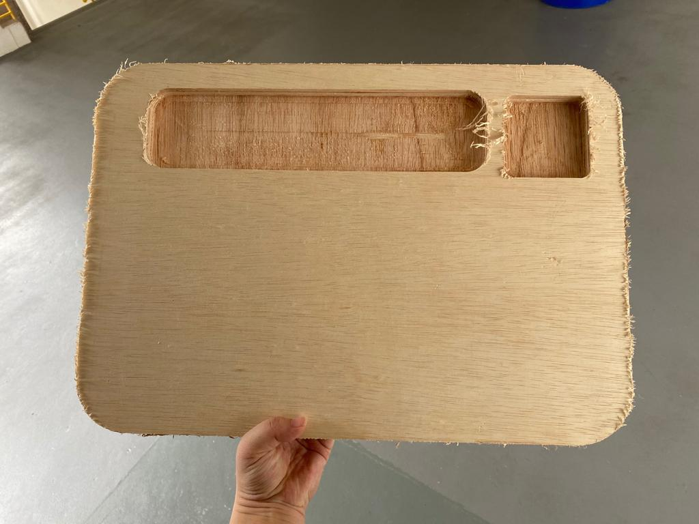
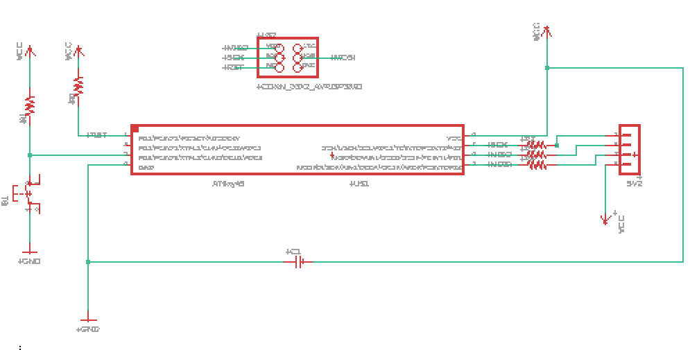

Project Planning
In last semester, I did a lithophane lamp. I really like lithophanes, so i wanted to see how I can incorperate lithophanes into my project this semester.
Last semesters final project
My initial plan was to make the exact same thing but to swap out the laser cut box for a large format CNC but it was not feasable. Hence I decided to make a desktop organiser. Below is a sketch of my idea.
I feel that this project is a good summary of all the skills I have learnt in this whole module as it uses the machines that we have learnt in the last semester in EP1000, so its a nice way to end the module.
Bill of Materials
- 3mm Ply wood
- 25mm wood
- RGB LED
- Copper board for PCB
- Dupont Cables
- ATTiny85 MCU
- 499Ohm Resistors x3
- 1k Ohm Resistor
- Capacitor
- 4 Pin Header
3D Printing
3D printing lithophanes are really easy thats why I enjoy printing them hehee. Anyways I played around with some pictures last sem and I really like the image of "The Great Wave off Kanagawa" on the lithophane, so that was the image I decided to use.
To generate the lithophane file, we simply put the selected image onto this websiteand download the STL file.
Once I had the file, I brought it into Ultimaker and slice it (follow the recommended settings). Then proceded to print it on the 3D printer
Laser Cutting
The laser cutting component was the same as last sem as well. It was a box that could be held together with the 'jig-saw' joints with a hole at the back which is able to fit the LED in.
The dimensions of this box is 80x80mm and designed using Fusion360.
Laser Cutting and 3D Print
CNC
The CNC component was the whole 'desktop organiser' part. I decided to make it 300x500mm which is quite big in hindsight. Similar to laser cutting, the design was drew out on Fusion360 first before the DXF file was then formatted into a .tap file using the computer attached to the CNC at T11C.
The idea was to have 2 pockets which are milled into the surface (not through!) But by doing so I needed to use a wood of thicker dimension so that there is enough space left. Hence the full dimensions of my desktop organiser was 300x500x25mm. The pockets are 18mm deep.
Since we are using the CNC, I had to round the edges since the CNC is unable to cut sharp edges(drill bit is round)
I used the large format CNC at T11C to cut out my desktop organiser. IMPORTANT, take note that there must be someone with you when you are using the CNC as it is a large machine so for safety reasons no using it on your own and for students only operate it under the supervision of the teachers who are trained.
Mr Chew helped with preparing the file for the CNC, but to do so, we first have the saved DXF file from Fusion that is brought onto the comoputer at the CNC, over there it is then opened on the software there. On it we are to selecte the different surfaces and key in the different diemnsions that we want to cut to also add tabs so that the thing dont fly out when cutting.
Remember to properly set the x, y, x axis as well as turn on the vacuum before starting the cut.

After cutting, we had to lift the whole piece of wood to 'hammer' out the piece as it was tabbed onto the big piece of wood. It was also really 'hairy' on the edges, so I used the sanding machine to help get rid of it and smoothen the edge.
Before
After
Electronics Production
Starting the board. My board has a really simple function, it consists of a RGB LED and a push button switch.
The RGB LED requires 3 pins while the push button requires 1. I deicded to use the ATTiny85 for the board was there were enough pins as well as memory for the project I want to do.
Board Schemetics
As seen from the schemetics, the board only consists of a 4pins header which will be used to connect the RGB LED externally and a push button switch.
Board Traces
Once we have the PNG file for the traces and outlines, we can then generate the Gcode using mods. (refere to electronics production for mods setting)
Once the board had been cut out, I then had to solder the components onto the board. The parts can be refered on the schemetics. Sadly I dont have pictures of when I was soldering but this is the done outcome
There are 2 yellow wires there, they were added because I forgot to connect the VCC and Ground from my chip to my connector thing in my schemetics. So they are there to kind make a connection to the 2 pins.
That covers up the portion for my production of the board.
Electronics Programming
The plan for my project was similar to my previous project. I wanted a RGB LED to change colour, but this time a push button switch is added so that everytime it is pressed it will change colour.
Arduino Code
Take note of the delay timing between each mode, it is like a little pause before it switches to the next colour. This program is so that the RGB LED will turn on as well as change colour everytime the push button switch is pressed. It has a cycle of 8 colours and once that cycle is finished the LED will turn off.
Below is the code
Overall
The final product looks like the picture above. The large pocket in will be able to hold your stationary as well as tiny things, It has a really large space and it is quiet deep in as well. Where as the smaller pocket is used to place the circuit board inside and the light above it.